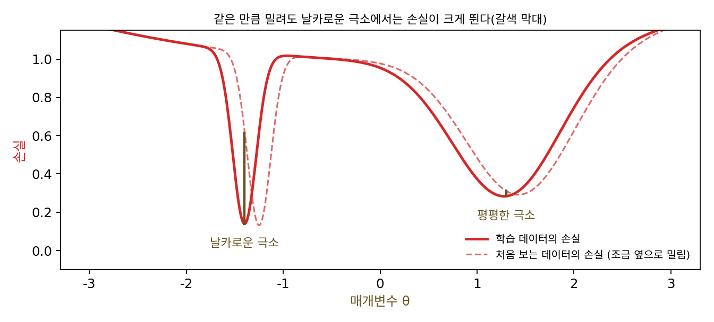
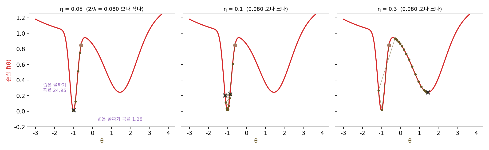
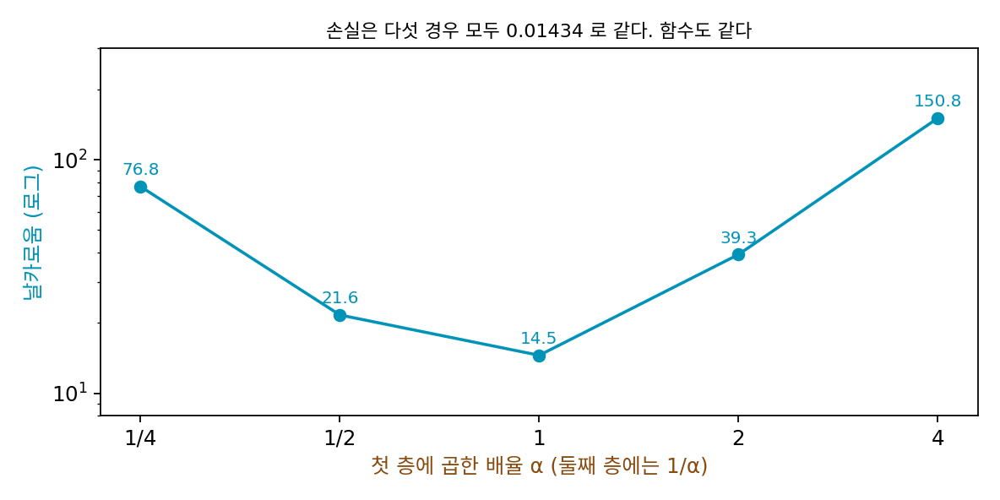

평평한 극소: 학습률이 바닥을 고른다
안정성의 가장자리에서 본 것을 뒤집어 보자. 학습률을 η로 고정하면 샤프니스가 2/η보다 큰 자리에는 경사하강이 머물 수 없었다. 넘으면 손실이 튀면서 샤프니스가 낮은 곳으로 옮겨 갔다. 그렇다면 손실의 바닥이 여럿이고 그 가운데 몇은 2/η보다 날카롭다면, 경사하강은 그 바닥들에 내려앉지 못하고 덜 날카로운 바닥만 고를 것이다. 학습률이 수렴 속도만 정하는 것이 아니라 어느 바닥에 닿을지도 정한다는 말인데, 그렇게 골라진 넓고 평평한 바닥은 좁고 날카로운 바닥과 무엇이 다를까?
역사: 적은 비트로 적을 수 있는 바닥
넓고 평평한 바닥이 무엇이 다른가라는 물음을 처음 붙든 사람들은 학습률이 아니라 일반화, 곧 처음 보는 데이터에서도 잘 맞는지를 궁금해했다. 뮌헨 공과대학교의 제프 호흐라이터(Sepp Hochreiter)와 스위스 루가노의 연구소(IDSIA)에 있던 위르겐 슈미트후버(Jürgen Schmidhuber)는 1994년 신경정보처리시스템 학회에 「평평한 극소를 찾아 신경망을 단순하게」를 냈다. 그리고 1997년에는 『뉴럴 컴퓨테이션』에 긴 논문 「평평한 극소(Flat Minima)」를 실었다. 그들은 평평한 극소를 「가중치 공간에서 오차가 거의 그대로인 넓고 이어진 영역」이라 정의했다. 근거는 정보의 양이었다. 날카로운 극소에 앉은 가중치는 조금만 틀려도 오차가 커지니 아주 정밀하게, 곧 많은 비트로 적어야 한다. 평평한 극소의 가중치는 대충 적어도 된다. 가장 짧게 적을 수 있는 모델이 가장 잘 일반화한다는 최소 기술 길이(MDL)의 생각을 따르면 평평한 극소가 더 단순하고 덜 오버피팅한 신경망이다. 그들의 알고리즘 「평평한 극소 찾기」는 2차 미분이 필요했지만, 펄머터의 헤시안-벡터 곱을 써서 역전파와 같은 차수의 계산으로 돌아가게 했다. 주식 시장 예측 실험에서는 보통의 역전파, 가중치 감쇠, 가중치를 2차 미분으로 가지치기하는 방법들보다 나았다고 보고했다.
20년 뒤 니티시 케스카르(Nitish Shirish Keskar)와 동료들은 2017년 국제 표현 학습 학회 논문 「딥러닝의 큰 배치 학습에 대하여: 일반화 격차와 날카로운 극소」에서 같은 그림을 실험으로 다시 꺼냈다. 미니배치를 256장으로 할 때보다 학습 데이터의 10%로 키울 때 시험 정확도가 많게는 5%포인트 떨어졌는데, 오버피팅 때문은 아니었다. 학습이 끝난 두 바닥 사이를 직선으로 이어 손실을 그려 보니, 큰 미니배치의 바닥이 「눈에 띄게 날카로웠다」. 그들은 샤프니스를 헤시안의 고윳값 대신 바닥 둘레 작은 상자(크기 10⁻³ 정도) 안에서 손실이 가장 크게 오르는 값으로 쟀다. 고윳값 계산이 딥러닝에서는 너무 비쌌기 때문이다. 그리고 작은 미니배치는 그래디언트의 노이즈 덕분에 평평한 바닥으로 간다고 보았다.

좁은 골짜기와 넓은 골짜기
학습률이 바닥을 고르는지 보려면, 샤프니스가 크게 다른 바닥 두 개가 함께 있는 가장 작은 손실이 좋다. 파라미터 하나짜리 손실에 골짜기를 둘 판다. 왼쪽은 좁고 깊고, 오른쪽은 넓고 얕다(식은 위젯 3과 그림 설명에 있다). 뉴턴법으로 두 바닥을 찾으면 다음과 같다.
| 바닥 θ* | 바닥의 손실 | 곡률 (샤프니스) | 2/곡률 | 손실이 0.05 오르는 폭 | |
|---|---|---|---|---|---|
| 좁은 골짜기 | −0.9974 | 0.0139 | 24.95 | 0.0802 | 0.128 |
| 넓은 골짜기 | 1.4534 | 0.2436 | 1.284 | 1.558 | 0.567 |
좁은 골짜기가 더 깊으니, 손실만 보면 좁은 골짜기가 더 좋은 답이다. −3에서 4 사이에 고르게 놓은 출발점 401개에서 학습률만 바꿔 가며 3000스텝씩 경사하강을 하고, 마지막 100스텝이 어디에 머무는지 보았다.
| 학습률 η | 좁은 골짜기 | 넓은 골짜기 |
|---|---|---|
| 0.05, 0.08 | 149개 멈춤 | 252개 멈춤 |
| 0.081, 0.1, 0.2, 0.25 | 149개가 두 점 사이를 오감 | 252개 멈춤 |
| 0.27 ~ 1.5 | 없음 | 401개 모두 멈춤 |
| 1.6 | 없음 | 401개 모두 두 점 사이를 오감 |
학습률이 좁은 골짜기의 2/곡률 = 0.0802보다 작으면 좁은 골짜기 쪽에서 출발한 149개가 그 바닥에 멈춘다. 0.0802를 넘자마자 그 149개는 바닥에 멈추지 못하고 골짜기의 두 벽 사이를 오간다. 학습률 0.1이면 −1.1267과 −0.8615를 번갈아 밟고, 그 두 점의 평균 손실은 0.2106으로 바닥 0.0139보다 열다섯 배 높다. 2차 함수라면 이 학습률에서 터졌을 텐데, 골짜기의 벽이 위로 갈수록 완만해져서 오감이 한 크기에서 멈춘 것이다. 학습률을 0.27로 올리면 오가던 스텝이 벽을 넘어 넓은 골짜기로 떨어지고, 401개 모두가 넓은 골짜기에 멈춘다. 넓은 골짜기는 학습률이 그 골짜기의 2/곡률 1.558을 넘는 1.6에서야 버티지 못한다. 학습률이 두 바닥 가운데 덜 깊지만 덜 날카로운 쪽을 고른 것이다.
이렇게 바닥 둘레의 넓은 영역에서 손실이 거의 그대로인 바닥, 곧 샤프니스가 작은 바닥을 평평한 극소 (둘레가 넓고 완만한 바닥 / flat minimum)라 한다. 반대쪽은 날카로운 극소다. 학습률 η의 경사하강이 멈출 수 있는 바닥은 샤프니스가 2/η보다 작은 바닥뿐이다.

평평함이 좋은 성질이라는 생각에는 반론도 있다. 로랑 딘(Laurent Dinh), 라즈반 파스카누(Razvan Pascanu), 사미 벤지오(Samy Bengio), 요슈아 벤지오(Yoshua Bengio)는 2017년 국제 기계학습 학회(ICML) 논문 「날카로운 극소도 일반화할 수 있다」에서 ReLU 신경망의 대칭을 지적했다. ReLU는 relu(αz) = α·relu(z)(α > 0)이므로, 첫 층의 가중치와 편향에 α를 곱하고 둘째 층의 가중치를 α로 나누면 신경망이 계산하는 함수가 하나도 바뀌지 않는다.
같은 데이터로 은닉층 하나(폭 32)짜리 ReLU 신경망(파라미터 129개)을 학습한 뒤 이렇게 바꿔 써 보면, 손실은 다섯 경우 모두 0.014340인데 샤프니스는 α = 1/4, 1/2, 1, 2, 4에서 76.77, 21.63, 14.54, 39.30, 150.85다. 같은 함수가 날카로운 바닥에도 평평한 바닥에도 앉을 수 있으니, 샤프니스 하나만으로는 그 함수가 처음 보는 데이터에 잘 맞을지 가를 수 없다는 것이 그들의 주장이다.

ML에서: 미니배치 크기와 샤프니스
케스카르와 동료들의 물음을 이 장의 작은 신경망으로 작게 따라 해 보자. 학습률 0.05로 같은 출발점에서 미니배치 크기 B만 10, 50, 200(전체)으로 바꿔 4000스텝씩 학습하고, 전체 데이터 손실의 샤프니스를 쟀다. 손실은 0.00711, 0.00648, 0.00621로 비슷하고, 샤프니스는 22.23, 27.12, 28.38이다. 셋 다 2/η = 40보다 작아서 가장자리에 닿기 전인데도, 미니배치가 작을수록 덜 날카로운 곳에 있다. 미니배치의 노이즈가 날카로운 방향으로 파라미터를 흔들어 그런 곳에 오래 머물지 못하게 하는 것으로 볼 수 있다. 평평한 바닥이 정말 처음 보는 데이터에 더 잘 맞는지, 그리고 딘과 동료들의 반론을 어떻게 받아들일지는 경사하강이 여러 해 가운데 어느 것을 고르는가, 곧 암묵적 편향을 다룰 때 이어서 따진다.
문제 7. 맛을 맞추기 쉬운 레시피
쿠키 레시피 두 가지가 있다. 맛의 아쉬움을 점수로 매기면, 레시피 A는 설탕을 딱 맞게 넣었을 때 0.5점이고 정량에서 Δ숟가락 어긋나면 0.5 + 4Δ²점이다. 레시피 B는 딱 맞으면 1점이고 어긋나면 1 + 0.25Δ²점이다(낮을수록 좋다). (가) 딱 맞게 넣을 수 있다면 어느 쪽이 좋은가? (나) 계량스푼이 없어 늘 0.5숟가락쯤 어긋난다면? 1숟가락쯤이면? (다) 두 레시피의 아쉬움이 같아지는 어긋남 Δ는?

당연히 A죠. 0.5점이 1점보다 낮으니까요. 어긋나 봐야 조금이겠죠.

0.5숟가락 어긋날 때를 계산해 봐요.

A는 0.5 + 4 × 0.25 = 1.5점, B는 1 + 0.25 × 0.25 = 1.0625점이에요. 뒤집혔네요. 1숟가락이면 A가 4.5점, B가 1.25점이고요.

(다)는 0.5 + 4Δ² = 1 + 0.25Δ²에서 Δ = 0.3651이야. 어긋남 Δ가 0.37숟가락보다 크면 B가 나아. A는 바닥이 낮지만 날카롭고, B는 바닥이 높지만 평평해. 좁은 골짜기가 A, 넓은 골짜기가 B야.

학습한 신경망에게 「어긋난 설탕」은 무엇일까요?

처음 보는 데이터요. 처음 보는 데이터의 손실이 학습 데이터의 손실을 조금 민 모양이라면, 학습 데이터에서 찾은 바닥은 처음 보는 데이터에서는 조금 어긋난 자리가 돼요. 그때 날카로운 바닥은 손해가 커요. 가중치를 적을 때 반올림하면 가중치도 그만큼 어긋나고요. 호흐라이터와 슈미트후버가 비트 수로 말한 게 그 얘기예요.

시험 범위를 하나로 찍어서 거기만 판 친구가 레시피 A, 넓게 공부한 친구가 레시피 B네요. 범위가 조금만 바뀌어도 A는 무너지고 B는 점수가 덜 흔들려요.
문제 8. 같은 함수, 다른 샤프니스
신경망 f(x) = w₂·relu(w₁x)에 데이터가 하나 (x, y) = (1, 1)뿐이고 손실은 ½(w₂w₁ − 1)²이다. (가) 손실이 0인 파라미터를 모두 적어라(w₁ > 0). (나) (w₁, w₂) = (α, 1/α)에서 헤시안과 샤프니스를 α = 1, 2, 10, 1/2일 때 구하라. (다) 이 바닥들 가운데 「가장 평평한」 것은 어느 것이고, 그 말에 뜻이 있는가?
(가)는 w₁w₂ = 1인 곡선 전체예요. 바닥이 점이 아니라 선이네요. (나)를 계산하면 헤시안의 첫 줄이 (1/α², 1), 둘째 줄이 (1, α²)이고 고윳값은 0과 α² + 1/α²예요. α = 1이면 2, 2면 4.25, 10이면 100.01, 1/2이면 다시 4.25요.
고윳값 하나가 0인 건 바닥이 곡선이라 곡선을 따라 움직이면 손실이 그대로라서야. 그럼 (다)는 α = 1이 샤프니스 2로 가장 평평하니까 거기가 제일 좋은 바닥이겠네.
α = 1과 α = 10인 두 신경망에 x = 3을 넣으면 각각 무엇을 내놓죠?

1 × relu(3) = 3, 0.1 × relu(30) = 3. 똑같아요. 아무 x를 넣어도 w₂w₁x라서 같은 함수예요. 같은 함수인데 샤프니스가 2에서 100.01까지 마음대로 바뀌네요. 그럼 「가장 평평한 바닥이 제일 좋다」는 말은 함수가 아니라 파라미터를 어떻게 적었느냐에 대한 말이에요.

그래요. 딘과 동료들의 반론이 이거예요. 그런데 이 대칭은 relu(αz) = α·relu(z)라는 성질에 기대고 있어요. tanh라면요?

tanh(2z)는 2·tanh(z)가 아니니까 이렇게 바꿔 쓰면 함수가 바뀌어요. 이 반론은 ReLU처럼 배율을 밖으로 뺄 수 있는 신경망에서 성립하는 거네요. 그래도 샤프니스를 잴 때 파라미터의 크기를 함께 봐야 한다는 건 남아요. 좌표를 바꾸면 2차 미분이 바뀐다는 걸 미적분에서 치환할 때 봤던 거랑 같아요.
같은 보고서를 글자 크기만 키워 냈더니 「분량이 많다」고 칭찬받은 꼴이네요. 글자 크기가 α이고, 분량을 재는 방식이 내용(함수)이 아니라 겉모양(파라미터)을 잰 거예요.
문제 9. 큰 미니배치가 더 평평한 바닥에 간다?
작은 신경망을 학습률 0.05로, 미니배치 크기 B = 10, 50, 200(전체)으로 데이터를 200번씩 돌며(200에포크) 학습했다. 스텝 수는 4000, 800, 200이다. 끝난 뒤 전체 데이터 손실은 0.00711, 0.01496, 0.05295이고 샤프니스는 22.23, 16.27, 10.16이다. (가) 같은 에포크로 잰 이 세 샤프니스만 보면 미니배치와 샤프니스는 어떤 관계로 보이는가? (나) 같은 4000스텝으로 맞추면 손실은 0.00711, 0.00648, 0.00621이고 샤프니스는 22.23, 27.12, 28.38이다. 어느 비교가 옳은가?
(가)는 미니배치가 클수록 샤프니스가 10.16까지 작아지니까 큰 미니배치가 더 평평한 바닥으로 가는 거예요. 케스카르 논문이랑 반대네요?
B = 200의 손실은 얼마였죠?
0.05295요. B = 10보다 일곱 배 넘게, B = 50보다도 세 배 넘게 커요. 아직 바닥에 가지도 않았네요.
같은 에포크면 B = 200은 200스텝밖에 안 걸었어. 샤프니스는 학습하는 동안 처음 10.07에서 저절로 차올랐으니까, 덜 걸은 쪽이 덜 날카로운 건 바닥을 비교한 게 아니라 학습이 어디까지 갔는지를 비교한 거야.
그럼 스텝 수를 맞춘 (나)에서는요?
손실이 0.0062~0.0071로 비슷해졌을 때 샤프니스는 B = 10이 22.23으로 가장 작아요. 작은 미니배치가 덜 날카로운 곳에 있어요. 케스카르와 같은 방향이에요. 다만 이건 「손실이 비슷한 곳끼리」 비교라는 조건이 있어야 뜻이 있어요. 함수의 극한을 비교할 때 같은 점으로 가는 수열끼리 비교하던 것처럼요.

미니배치를 키울 때 학습률은 그대로 두고 에포크만 맞추면 스텝 수가 확 줄어드니까, 그 상태로 샤프니스나 정확도를 비교하면 엉뚱한 결론이 나겠네요. 고얄 논문이 미니배치를 키울 때 학습률도 같이 키운 게 스텝 수가 줄어서였고요. 조원들 실력을 비교하는데 한 명은 과제를 절반만 하고 냈는데 「이 친구는 실수가 적다」고 하면 안 되는 것처럼요.